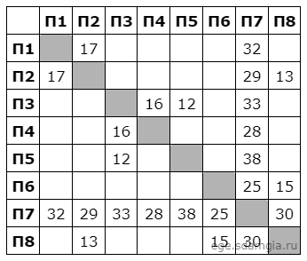

📋Условие задачи
На рисунке схема дорог изображена в виде графа, в таблице содержатся сведения о длине этих дорог в километрах.
Так как таблицу и схему рисовали независимо друг от друга, нумерация населённых пунктов в таблице никак не связана с буквенными обозначениями на графе. Известно, что дорога CD длиннее дороги EF.
Определите сумму длин дорог АB и AG.
📸 Визуальное представление:


🔑Принцип решения
Так как нумерация в таблице никак не связана с буквами на графе напрямую, перебирать все 8! = 40 320 вариантов вручную бессмысленно. Вместо этого используем инвариант, который не зависит от переименования вершин — степень вершины (количество дорог, выходящих из пункта).
Что такое таблица и граф?
Таблица содержит расстояния между 8 пунктами (обозначены цифрами 1-8)
Граф показывает связи между 8 пунктами (обозначены буквами A-H) и дороги между ними
Нам нужно найти, какой цифре соответствует какая буква
Степени вершин на графе:
| Вершина | A | B | C | D | E | F | G | H |
|---|---|---|---|---|---|---|---|---|
| Степень | 7 | 2 | 3 | 2 | 2 | 3 | 3 | 2 |
Общий алгоритм решения:
- 1. Степени: Считаем степень каждой буквы на графе и каждой цифры в таблице
- 2. Сопоставление по степени: Вершины с одинаковой (и тем более уникальной) степенью — кандидаты на соответствие
- 3. Уточнение по соседям: Там, где степеней недостаточно, смотрим на степени соседних вершин
- 4. Фильтрация: Из оставшихся вариантов выбираем тот, где CD > EF
- 5. Вычисление: Находим сумму длин дорог AB и AG
🧠Способ 1: Устное решение (по степеням вершин)
Этот способ не требует программирования — достаточно посчитать степени вершин и внимательно сопоставить их.
Шаг 1. Считаем степени цифр в таблице
Степень цифры — это количество заполненных ячеек в её строке/столбце таблицы:
| Пункт | П1 | П2 | П3 | П4 | П5 | П6 | П7 | П8 |
|---|---|---|---|---|---|---|---|---|
| Связи | П2, П7 | П1, П7, П8 | П4, П5, П7 | П3, П7 | П3, П7 | П7, П8 | П1-П6, П8 | П2, П6, П7 |
| Степень | 2 | 3 | 3 | 2 | 2 | 2 | 7 | 3 |
Шаг 2. Находим вершину A — единственную степени 7
На графе только A соединена со всеми остальными вершинами (степень 7). В таблице только у П7 степень 7.
➡️ A = П7
Шаг 3. Находим вершину C среди трёх вершин степени 3
На графе степень 3 имеют C, F, G. У таблицы степень 3 имеют П2, П3, П8.
Смотрим на "соседей, кроме A":
- C кроме A соединена с B и D — а у них обеих степень 2, и между собой B и D не соединены
- F кроме A соединена с E (степень 2) и G (степень 3)
- G кроме A соединена с F (степень 3) и H (степень 2)
Значит, C — единственная вершина степени 3, у которой оба "неглавных" соседа имеют степень 2. Проверяем таблицу: у П3 кроме П7 соседи — П4 и П5 (степень 2 у обеих).
➡️ C = П3, а значит {B, D} = {П4, П5} (порядок пока не известен)
Шаг 4. Оставшиеся F и G — вершины, соединённые между собой
Остаются П2 и П8 для F и G. На графе F и G соединены напрямую — и в таблице П2 и П8 тоже соединены (это единственная связь между двумя оставшимися вершинами степени 3), что подтверждает соответствие.
У F есть ещё сосед E (степень 2), у G — сосед H (степень 2). В таблице П2 связан с П1, а П8 — с П6.
➡️ Либо (F=П2, E=П1, G=П8, H=П6), либо (F=П8, E=П6, G=П2, H=П1)
Шаг 5. Снимаем неоднозначность условием CD > EF
Осталось 2 варианта для (F,G,E,H) × 2 варианта для (B,D) = 4 комбинации. Проверяем расстояние CD (П3–?) и EF (?–?) по таблице для каждой:
- D = П5 → CD = П3–П5 = 12; D = П4 → CD = П3–П4 = 16
- Ветка 1 (E=П1, F=П2) → EF = П1–П2 = 17; Ветка 2 (E=П6, F=П8) → EF = П6–П8 = 15
Условию CD > EF удовлетворяет только пара CD = 16 > EF = 15, то есть D = П4 (а значит B = П5) и ветка 2 (F = П8, E = П6, G = П2, H = П1).
✅ Итоговое соответствие:
AB = П7–П5 = 38 км, AG = П7–П2 = 29 км ⟹ 38 + 29 = 67
💻Способ 2: Программное решение
Тот же принцип (совпадение структуры связей) можно проверить автоматически перебором всех перестановок букв — так надёжнее, если вручную сложно отследить все связи.
Python решение:
from itertools import permutations
table = '12 17 21 27 28 34 35 37 43 47 53 57 67 68 71 72 73 74 75 76 78 82 86 87'
graph = 'AB BA AC CA AD DA BC CB CD DC AE EA AF FA AG GA AH HA EF FE FG GF GH HG'
for p in permutations('ABCDEFGH'):
new_graph = table
for i in range(1, 9):
new_graph = new_graph.replace(str(i), p[i - 1])
if set(new_graph.split()) == set(graph.split()):
print(p)Объяснение кода:
- table: Строка, где первая цифра - номер строки, вторая - номер столбца ячейки со значением
- graph: Строка с дорогами на графе в виде пар букв (AB означает дорогу от A к B)
- permutations('ABCDEFGH'): Генерирует все возможные перестановки букв (каждой букве соответствует позиция от 1 до 8)
- replace(str(i), p[i - 1]): Заменяем цифру i на букву p[i-1]
- set(new_graph.split()) == set(graph.split()): Проверяем, совпадает ли набор дорог
💡Пояснения результатов
После запуска кода получаем несколько подходящих перестановок (они соответствуют структурной симметрии графа — паре B/D и паре ветвей E-F / G-H). Из них нужно выбрать те, которые удовлетворяют условию CD > EF.
✅ Результаты перебора:
('E', 'F', 'C', 'B', 'D', 'H', 'A', 'G')('E', 'F', 'C', 'D', 'B', 'H', 'A', 'G')('H', 'G', 'C', 'B', 'D', 'E', 'A', 'F')('H', 'G', 'C', 'D', 'B', 'E', 'A', 'F')
Таблица соответствия цифр буквам (подходящий вариант):
| Позиция | 1 | 2 | 3 | 4 | 5 | 6 | 7 | 8 |
|---|---|---|---|---|---|---|---|---|
| Буква | H | G | C | D | B | E | A | F |
Проверка условия CD > EF:
Для каждого из 4 вариантов вычисляем CD и EF по таблице расстояний и оставляем только тот, где CD > EF:
('E','F','C','B','D','H','A','G'): CD = П3-П5 = 12, EF = П1-П2 = 17 — не подходит('E','F','C','D','B','H','A','G'): CD = П3-П4 = 16, EF = П1-П2 = 17 — не подходит('H','G','C','B','D','E','A','F'): CD = П3-П5 = 12, EF = П6-П8 = 15 — не подходит('H','G','C','D','B','E','A','F'): CD = П3-П4 = 16, EF = П6-П8 = 15 — 16 > 15 ✅ подходит!
✅Итоговый ответ
Найденные дороги:
AB: A = П7, B = П5 ⟹ П7-П5 = 38 км
AG: A = П7, G = П2 ⟹ П7-П2 = 29 км
Вычисление суммы:
AB + AG = 38 + 29 = 67